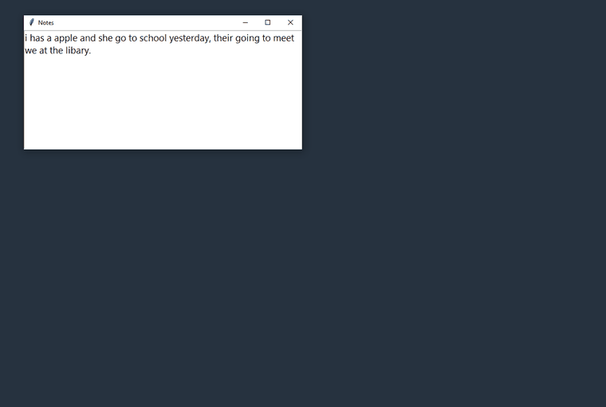
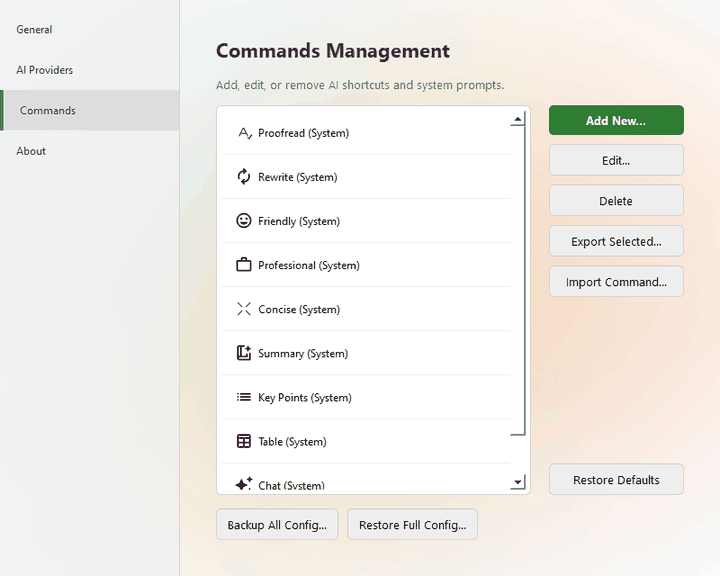

Fix, rewrite and summarize text in any app with one hotkey
AI Shortcuts is a free, open-source AI writing assistant for Windows, macOS and Linux. Select text, press the shortcut, pick a command, and the result replaces your text in place.
Download free View on GitHub
Why AI Shortcuts
One hotkey, any app
Works in your editor, browser, chat and email. No copy-paste into a chat tab.
Your commands
Proofread, Rewrite, Friendly, Professional, Concise, Summary, Key Points, Table, or any prompt you write. Reorder, back up and share them.
Your model
Cloud or local, with a different provider or model per command.
Private by design
No telemetry, no ads. Text only goes to the provider you chose. Use Ollama or MLX to stay fully offline.
Chat and attachments
Ask follow-up questions, attach images or text files, or use chat mode with no selection.
Multilingual interface
English, Tiếng Việt, Italiano, 日本語 and 简体中文 on Windows and Linux; seven languages on macOS.
Works with the AI you prefer
| Provider | Type |
|---|---|
| Google Gemini | Cloud, free tier |
| OpenAI and compatible APIs | Cloud / local |
| Anthropic Claude | Cloud |
| Mistral AI | Cloud |
| OpenRouter (100+ models) | Cloud |
| Ollama, LM Studio, llama.cpp | Local |
| MLX on Apple Silicon | On-device (macOS) |
Manage your own commands

Download
All versions and checksums: GitHub Releases. Binaries ship with SHA-256 checksums and build provenance.
FAQ
Is AI Shortcuts free?
Yes. It is open source under GPL-3.0. You pay only the AI provider you choose; Gemini has a free tier and local models cost nothing.
Where does my text go?
Only to the AI provider you configure, and only when you trigger a command. There is no telemetry or analytics.
Windows shows a SmartScreen warning.
The binary is not code-signed yet. Choose More info → Run anyway, or verify the checksum first.
How do I verify my download?
sha256sum -c SHA256SUMS.txt --ignore-missing gh attestation verify <file> --repo gemkids275/AIShortcuts
Does it work on Wayland?
Not yet. Linux needs an X11 session and xclip or xsel, because Wayland blocks global hotkeys.
Is this the same as WritingTools?
It is a fork of WritingTools by theJayTea, extended with a command manager, attachments, more providers and more languages.